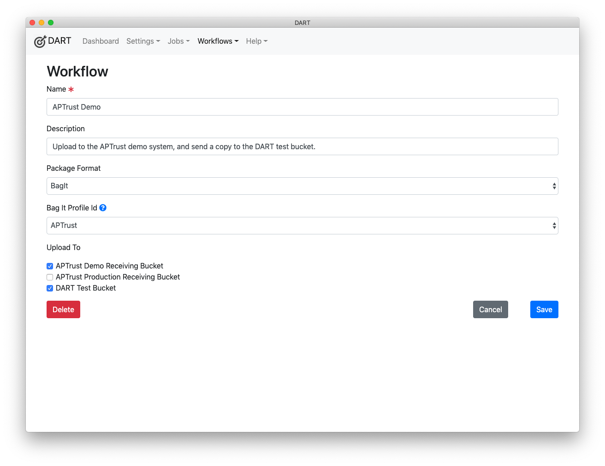
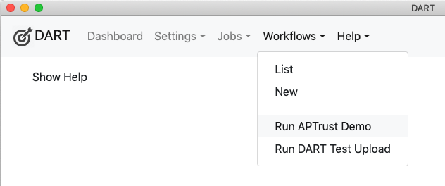
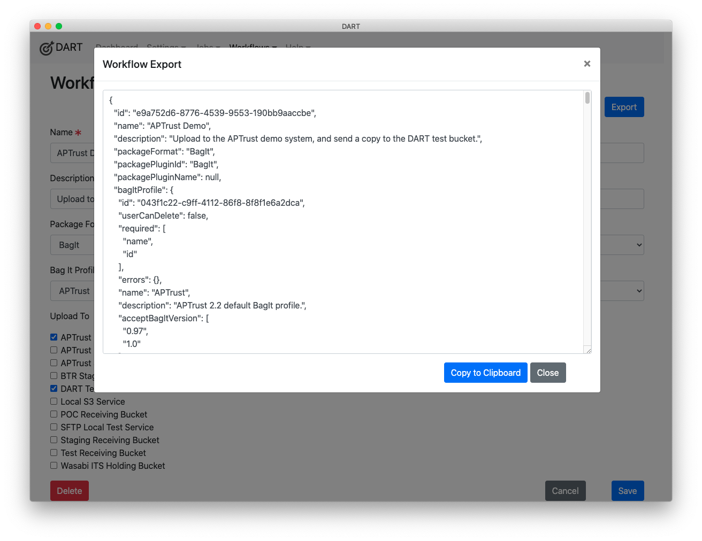

Workflows
A workflow is a set of packaging, validation, and/or upload operations that you define as a template to be run on any sets of files you choose.
Workflows ensure that the exact same set of steps is run on each set of files. DART can run workflows from the UI and from the command line, which means you can create scripts that use workflows to package and upload materials.
Note
In the future, DART plans to support running workflows on servers. Currently, this is difficult because DART's underlying Electron framework insists on graphics capabilities even when running in command-line mode.
We plan to release a stand-alone binary that will be able to run DART jobs and workflows on a server without requiring a UI or graphics capabilities. You'll find a draft of the proposed features here . You can provide feedback through the survey at the end of the features document.
Defining a Workflow
DART provides two ways to define a workflow: from a job or from scratch.
Creating a Workflow from a Job
The easiest way to create a workflow is to first create a job that includes all of the operations you want to include, run the job to ensure it works, then click the Create Workflow button on the Review and Run screen.
Creating a Workflow from Scratch
To create a workflow from scratch:
-
Choose Workflows > New from the menu.
-
Fill in the details.
-
The Name is required and should describe what the workflow will do. This name will appear on the Workflow menu, and scripted tasks will use this name to reference the workflow. (See #2 under Tips for Workflows below.)
-
The Description is for your internal use.
-
Choose the Package Format that suits your needs.
-
If you chose BagIt as the Package Format, choose which BagIt Profile you want to use to build the bag. (See #1 under Tips for Workflows below.)
-
Choose the destination to which you want to upload the packaged files. Note that only Storage Services where Allows Upload is set to Yes will appear in the Upload To list.
-
Click Save, and remember that you can edit or delete this workflow later.
-

Tips for Workflows
-
Use customized BagIt profiles. DART lets you clone the base version of a BagIt profile and then add your own tag default values, so that you don't have to re-enter those values each time you create a new bag. For example, most BagIt profiles require a value for the Source-Organization tag, and typically, this value will be the same for every bag you create. Most profiles also require a number of other tags that may rarely or never change from bag to bag. For example, most depositors will set the same Access and Storage-Option values for 99% of the bags they upload to APTrust. Including in your workflow a custom BagIt profile with pre-set default values will save you having to re-enter common tag values, while still allowing you to override them when necessary.
-
Use meaningful names for your workflows. Many repositories include both a staging environment and a production environment. You may create workflows that are identical except that one pushes packages into the staging environment while the other pushes to production. DART lets you run workflows directly from the workflow menu. Meaningful names help uses choose the right workflow and understand what the consequences of the actions they are about to take.

Exporting a Workflow
You can export DART workflows to run on a server using dart-runner. To export a workflow:
- Choose Workflows > List from the DART menu.
- Click on the workflow you want to export.
- Click the blue Export button near the top right of the Workflow page.
Note
You may see a warning about unencrypted passwords included in the export. You can ignore this if you're copying the workflow directly to a server you trust. However, you should use environment variables instead of embedded, plain-text passwords when sending workflows to others via insecure networks. See Storage Service passwords for info on how to use environment variables.
After clicking Export, click Copy to Clipboard to copy the JSON.
